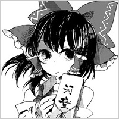

- Welcome to Touhou Wiki!
- Please register to edit. For assistance, check in with our Discord server or IRC channel.
Touhou Wiki:Guidelines/Standardization of Character Pages
This page is supposed to serve as an outline for current and future character pages (including those from Seihou Project, Uwabami Breakers, Fan-made characters, etc.). The other purpose of this project is to revise existing character pages to fit the structure described on this page.
A few preliminary guidelines:
- Topics that aren't covered by any of the listed sections would be listed under "General Information" by default.
- If there's a section that doesn't fit with any of these on any of the character pages, please merge it to any of the other sections whenever possible.
- If a section is deemed too short (like, a sentence or so), it can be merged to another short section or to General Information.
- For articles that contain more than one character such as Minor Characters, please "push" each heading down by one (i.e.
==to===). Also, the h3 sections (===) should use;before the sections name and not====.
Please use the talk page to address suggestions, concerns, and anything else that has to do with this standardization.
The Translated Name Name pronunciation in Japanese IPA with sound link (♫) (opt.) Alter. name or alter./incorrect romaji possibly in use (opt.) | |
|---|---|
|
Character image with their latest or colorous appearance (opt.) The source of where the image came from Their latest or commonly used title (opt.)More Character Titles | |
| Species |
Their Species (opt.) |
| Abilities |
What their powers are (opt.) |
| Age |
Their age (exact or approximate) (opt.) |
| Occupation |
Their Occupation (opt.) |
| Location |
Where they live or frequent (opt.) |
Music Themes | |
|
Titles of Songs (opt.) | |
Appearances | |
| Official Games | |
|
Official Games (Mystic Square, Ten Desires etc. but no non-Touhou game unless it's a non-Touhou character) (opt.) | |
| Print Works | |
|
Print Works (Perfect Memento in Strict Sense, Wild and Horned Hermit etc.) (opt.) | |
| Music CDs | |
|
CDs (On the cover or story coming with the CD) (opt.) | |
| Miscellaneous Works | |
|
Appearances in other official material (opt.) | |
| Other | |
|
Appearances in non-Touhou series, e.g. Seihou (opt.) | |
The Main Summary (主な概要 Omona gaiyo) is the main introduction of the article, above the content box and all other content in the article. It should be a good self-contained section, from a sentence or two to a full paragraph. But it's main purpose is the 'hook' of the article, it should be a quick and interesting blurb that grabs interest and seamlessly follows on to the next section, but shouldn't be any more detailed than it. Perk a reader's interest, but follow on with actual details later on. Don't just add random information here.
We should note that the PC-98 canon and the Windows canon are separate, where – according to ZUN – information should only come from Windows. We allow PC-98 information however, but it ought to be kept separate. I.e. describe the character using info from the Windows canon, then when you want to include the PC-98, start a new paragraph or sentence and start with something like "In the PC-98 however," to create a separation. Same goes for the Seihou Project and it ought to spread thruout the article. A good example is the Yin-Yang Orb page, where both canons describe the orb with a huge difference.
General Information[edit]
This section has actual in-depth information, and actually begins the real 'description' of the character. Information central to the character is described here. This is the first part of the 'body' of the article, if you think of it in essay-form. Sub-sections may be used to organize large subjects that might be unwieldy here. Otherwise, small pieces of less-important information that cannot be treated to a full explanation belong is placed in Additional Information.
Personality[edit]
Describes the characters personality, characters typical reactions to them, and how their personality is shaped (included occupational demeanor), and how it changes (or doesn't) throughout each game. Maybe also the way they speak.
Ability[edit]
- An ability
A list of abilities that the character has and an explanation of what they can do, how they have acquired them and any training regime they may have in developing them.
Occupation[edit]
Some examples of what the character does (include how they view their job, some visitors they contend with on a daily basis, how they got assigned to the job, hobbies, etc).
Possessions[edit]
This section is for items the character owns. If the item in question has an article, put a link to that article and give a short description. (May or may not become part of the infobox. See the talk page.)
Machinery[edit]
Mainly used for characters from the Seihou Project and Project Blank. Similar to Possessions, this describes the machines the character owns.
Backstory[edit]
This section is for descriptions of any storylines that led up to the character's appearance in the games, as well as their history.
Character Design[edit]
This section is to describe things related to the creation of the character of how ZUN stylised them, including their name and appearance.
Origin[edit]
This explains what the character was/may be based on. i.e real person, god, other media etc.
Name[edit]
Describe what the translations of the characters name is, what it means, and some other relations such as nicknames. Fanmade names should be included in the Fandom articles, unless the character doesn't have a name (e.g. Tokiko, the Five Magic Stones); this is an exception so we can allow visitors to understand the reasoning of the article's name coming from a fandom source.
Design[edit]
This section is a description of the character. Describe their outfit with as much detail as you can and how it changes from game to game, with the earliest appearance first and descends to the latest. Please DO NOT merge this section with any other section. may also contain ZUN's way of thinking.
Mystery and Theory[edit]
This section should only be used to list speculation based on official information, where each theory is under its own section. ZUN has a habit of giving narrow information, which creates such conspiracy theories within the fandom. Theories that aren't supported by any official work may be moved to the Fandom articles or removed depending how much support it gets from fans. (Any debates about whether or not a theory should be moved/removed should go on the talk page.) The section should start with {{Theories Summary|<character's name>}}.
Whether this stays on the character's article or into the Fandom articles hasn't been discussed.
Name of theory #1[edit]
Name of theory #2[edit]
<character>'s Appearances[edit]
Descriptions of the character's appearances in the games that includes the gameplay and their role in the story.
(PC-98) Games[edit]
Used to separate the character from the Windows games. Use "PC-98" if the Windows section is used.
(Windows) Games[edit]
- Game title
A summary of how the character impacted the plot goes here in relation to games. Spoilers of endings are to be avoided if the first 6 months of the game's release, but if they must be used, use the {{hidetext|spoiler tags}} template. Use "Windows" if the PC-98 section is used as well
;Title of the Adventure
:{{Main|Adventure Title#Location of the first lines of Character's dialogue|l1=Name of Adventure}}
This is where you describe the exploits of the character.
Spin-offs[edit]
To not make the game's section too overloaded, a separate section for spin-off games is included.
Literature[edit]
A list of stories related to official literature.
Seihou Project/Project Blank/Fangames[edit]
Used to separate the character from the Touhou Project, where characters have appeared outside the Touhou world, both official and unofficial. "Fangames" is only used if ZUN has participated in a fangame and contributed to a certain character (such as giving Shinki's theme in Magus in Mystic Geometries).
For when it comes to PC-98 characters that seems to have appeared during the Windows (such as Mima), use "After the PC-98" instead.
<Other>[edit]
In terms to other and the need for paragraphs, this section is for use for anything that doesn't fit anywhere. This is used if any other headers doesn't fit for certain information. Please note that this section may not be used all the time.
Relationships[edit]
In this section, you describe their main attitude and demeanour, towards other characters in general as well as what their day to day lives may entail.
Character Name #1[edit]
Here you explain what that character's relation is to the character on this page, how they met, their thoughts, feelings, as well as plot developments they've may had with them. Remember, it's what this character perceives them, not how they actually act.
Character Name #2[edit]
Minor Relationships[edit]
This is for characters who don't have a direct relationship with each other, but they still acknowledge each other through importance.
- Character Name #1
- Character Name #2
Gallery[edit]
This section is reserved for images that aren't profile pictures (including those used in official profiles and the character infobox) or significant alternate in-game portraits.
Use the following code:
<gallery> File:Sh03Gates1.png File:Sh03Gates2.png File:Sh03Gates3.png </gallery>
to get something like this:
Spell Cards[edit]
If possible, add a summary here that relates to the character's spell cards.
You should use the following code (with the character name and number replaced, careful not to spell it as "spellcard"!):
{{hidden begin|title = Spell Cards|titlestyle = background:palegreen; text-align:center;}}
{{#lsth:List of Spell Cards/Touhou Project 3|[[Raiko Horikawa]]}}
{{hidden end}}
The result should look something like this:
| Name | Translated | Comments | Games | Stage | ||
|---|---|---|---|---|---|---|
| Total: 15 | ||||||
| 一鼓「暴れ宮太鼓」 | First Drum "Raging Temple Taiko" | DDC | St. Ex | |||
| 二鼓「怨霊アヤノツヅミ」 | Second Drum "Vengeful Spirit Aya-no-Tsuzumi" | DDC | St. Ex | |||
| 三鼓「午前零時のスリーストライク」 | Third Drum "Three Strikes at Midnight" | DDC | St. Ex | |||
| 死鼓「ランドパーカス」 | Death Drum "Land Percuss" | DDC | St. Ex | |||
| 五鼓「デンデン太鼓」 | Fifth Drum "Den-Den Daiko" | DDC | St. Ex | |||
| 六鼓「オルタネイトスティッキング」 | Sixth Drum "Alternate Sticking" | DDC | St. Ex | |||
| 七鼓「高速和太鼓ロケット」 | Seventh Drum "High Speed Taiko Rocket" | DDC | St. Ex | |||
| 八鼓「雷神の怒り」 | Eighth Drum "Thunder God's Anger" | DDC | St. Ex | |||
| 「ブルーレディショー」 | "Blue Lady Show" | DDC | St. Ex | |||
| 「プリスティンビート」 | "Pristine Beat" | DDC | St. Ex | |||
| 雷符「怒りのデンデン太鼓」 | Thunder Sign "Den-Den Daiko of Rage" | ISC | St. 5 | |||
| 太鼓「ファンタジックウーファー」 | Taiko "Fantastic Woofer" | ISC | St. 5 | |||
| 輝天符「迅雷のドンドコ太鼓」 | Shining Heaven Sign "Thunderclap Dondoko Daiko" | Co-owner with Iku | VD | Nightmare Thursday - 2 | ||
| 輝神符「謎のドンドコ人だかり」 | Shining Divine Sign "Mysterious Dondoko Crowd" | Co-owner with Mamizou | VD | Nightmare Thursday - 3 | ||
| 輝星符「正体不明のドンドコ太鼓」 | Shining Star Sign "Unidentified Dondoko Daiko" | Co-owner with Nue | VD | Nightmare Thursday - 6 | ||
Additional Information[edit]
This section is for information that doesn't relate to the actual character in-universe, but to the character out-of-universe. For example, certain color palettes in the fighting games resembling other characters or the character's silhouette appearing on the cover of a game is information that would go here. Please keep it significant - "character X is the Nth girl with feature Z" isn't good information if it's placed anywhere other than this section. Place each piece of trivia into a bulleted list (using *) and keep it to one or two sentences if possible. If not, then they could be moved to another part of the article.
Fandom[edit]
This section is strictly for associations, memes, and information about the character in derivative works (basically, any fan work where ZUN isn't personally involved). To avoid clutter and the fact that this is technically the only section to contain unofficial content, the information ought to be placed on a Fandom page that's associated to the character. To an advantage however, more fandom content can be added rather than having a bulleted list.
Make sure the character page contains the Fandom section and that it contains the "main" link, as you can see from above. To do this, only add the following string of text: {{main|Fandom/Highly Responsive to Prayers#SinGyoku|l1=Fandom: SinGyoku}}; this is an example, where you can change the game title to the character's first game/literacy appearance, as well as the character's name so it can link directly to the character's fandom content.
Official Profiles[edit]
Official Profiles should be in a show/hide section (like Spell Cards). Please use this code, with of course the proper information filled in:
{{hidden begin|title = [[Imperishable Night]] - キャラ設定.txt|titlestyle = background:lightblue; text-align:center}}
{{Profile Quote
| image = [[File:WaHHReimu.jpg|Example Image]]
| text = This is the original text
| translation = This is the translated text
}}
{{hidden end}}
Place multiple ones for multiple profiles. It should produce something like this:
|  | This is the original text | This is the translated text |
Official Sources[edit]
This is another show/hide section. Place this code, and replace what's necessary:
{{hidden begin|title = Official sources|titlestyle = background:pink; text-align:center;}}
*2004/08/11 '''[[Imperishable Night]]''' - Extra Stage dialogue; キャラ設定.txt (official profile)
*2005/08/11 '''[[Bohemian Archive in Japanese Red]]''' - Article and Interview: Mokou
{{hidden end}}
It'll produce something like this:
- 2004/08/11 Imperishable Night - Extra Stage dialogue; キャラ設定.txt (official profile)
- 2005/08/11 Bohemian Archive in Japanese Red - Article and Interview: Mokou
References[edit]
If <ref> </ref> are used somewhere on this article, please end the page with this heading and use the {{smallrefs|2}} code.
And finally, all the templates should be placed here:
| This page is part of Project Characters, a Touhou Wiki project that aims to write proper descriptions for all official characters of Touhou Project. Please keep the character page guidelines in mind when contributing. |